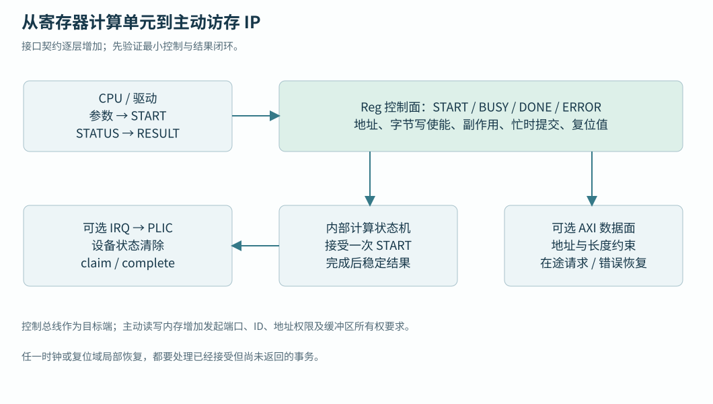

UNDERSTAND · TRACE · BUILD · VERIFY
15 · 自定义 IP 与系统接入
从寄存器计算单元到控制、数据、中断及复位契约。
各类设备已经展示了控制口、主动数据口和中断的不同职责。本章用一个独立寄存器加法单元收束这些知识，再说明如何通过既有扩展端口接入系统；这些是后续 NPU/ISP 设计接口的起点。
先定义一个完整的设备操作
lesson_reg_adder.sv 是教材独立的 32 位 Reg 单元。软件写 A/B，发 START，硬件计算模 2³² 加法，置 DONE 并按 IRQ_EN 输出电平中断。它没有 AXI burst 或 ID，接入系统时需要已有 AXI→Reg 桥和地址适配。该单元未接入生产 SoC。
设计重点是任务生命周期：START 接受时锁存操作数，busy 时禁止改输入和重入；DONE 未清时也拒绝新任务，避免覆盖尚未消费的完成结果。STATUS 中 DONE 用 W1C 清除，新完成与清除同拍时以新事件置位优先。这样软件可以判断每个操作是否被接受、结果是否有效，以及怎样解除中断。
| 单元内部偏移 | 约定 |
|---|---|
| 0x00 / 0x04 | A/B，RW，按 WSTRB 更新，busy 写返回 error |
| 0x08 | START，byte0 有效且 bit0=1 时提交 |
| 0x0c | STATUS：BUSY bit0、DONE bit1；写 bit1 清 DONE |
| 0x10 / 0x14 | RESULT 只读 / IRQ_EN bit0，irq=DONE & IRQ_EN |
| 未映射或非 4 字节对齐 | 响应 error，无寄存器副作用 |
该单元 valid 时 ready=1，没有请求队列。每个 valid&ready 的边沿都表示一次访问；连续保持 valid 就是连续访问，不能期望只触发一次。独立 TB 覆盖字节写、非法访问、busy/DONE 重入、结果及中断清除，实验 F 用它建立“契约能被正常和错误用例检验”的习惯。
接入 Reg 扩展端口
生产接入前要先选择未冲突的地址窗口，再配置 RegExtNumSlv、RegExtNumRules 和 RegionIdx/Start/End。端口数描述接口数量，规则数描述窗口数量；外部规则索引使用局部端口编号。gen_axi_out 同时把外部 Reg 窗口送向第一层桥，gen_reg_out 再选择外部设备。
wrapper 应检查绝对地址在本设备窗口内，减去基址形成内部偏移，适配请求/响应字段，并为关闭分支和错误访问提供响应。若随意截掉高地址位，会让其他地址别名到同一寄存器。软件头、地址属性与测试模型使用同一分配记录，本教材不预先占用生产地址。

接入中断并验证完成协议
把 irq 接到明确的外部源，更新 PLIC/Router/CLIC 生成尺寸和软件源号。此单元采用电平中断，直到清 DONE 才消除原因；CPU handler 领取源号、读取 RESULT、清 DONE，再 complete。源同步和 reset 期间电平也要有定义。
独立单元只证明 irq 引脚按约定变化；系统验证还要执行真实 CPU handler，检查被屏蔽、使能、未清、重复事件及异常源号。当前 58 个 PLIC 源由内部向量占用，新增源需要生成配置配合，不能仅接一根外部线就沿用旧表。
加入主动 AXI 数据口
计算单元从两个操作数扩展到数组后，需增加源/目的地址、长度、stride 和任务 ID，控制口仍使用 Reg，数据口从 AxiExt master 主动访存。先声明地址/数据/ID 宽、有限在途、支持的 burst、对齐与 4 KiB 拆分，再定义 R/B 错误如何转成任务失败。
数据口必须在最后一次写响应及约定可见性成立后报告完成；超时后保留设备可能仍使用的缓冲区。接到当前主 Crossbar 时，目标仍由现有地址图决定，访问外部主存会走当前 LLC 路径。NPU/ISP 绕过 LLC 是另一个下游拓扑设计，第 16 章单独讨论。
时钟、复位与停止过程
同域单元可以复用系统时钟；独立频率则需要协议完整的 CDC。停止过程要覆盖“尚未提交”“已接收但未完成”“结果已完成但未消费”。时钟门控应发生在约定的空闲或保持状态，复位后软件要能区分旧任务丢失与新任务。
电源门控还需要隔离、保持和唤醒顺序，当前 SoC 没有完整电源意图交付。后续平台应把外部存储 ready、复位释放、在途排空及失败恢复写成可观测接口。独立单元的异步复位清状态只是其中最小一层。
从单元到系统的验证递进
实验 F 只编译两份教学 SV 文件，在独立临时工作库运行，并额外注入失败检验日志检查器。之后的系统接入需另测地址首尾、32/64 位 lane、AXI/Reg 背压、PLIC 服务及 CPU/设备并发；加入 DMA 后再补缓冲区守卫、原子可见性和错误恢复。测试随着新增能力扩展，而不是把独立加法 PASS 当成整机证明。
NPU / ISP 旁路 LLC 的系统接入规划
用户规划让 NPU/ISP 数据流绕过 LLC，并与 LLC 下游在 DDR 前合流。新增一层互连需要合并 ID 空间、保存 W 路由和读写顺序、限制各端在途量，并定义背压与带宽保障。当前 SoC 的外部 master 入口通常仍进入原系统拓扑，接到该入口不自动等于实现 DDR 旁路。

| 模块 | 数据与控制接口 | 接入前需要的规格 |
|---|---|---|
| NPU | AXI 主端搬张量；Reg/AXI-Lite 控制；状态/IRQ；可选本地 SRAM | 算子、数据类型、布局、地址位宽、描述符/队列、错误与取消、对齐、支持的 burst、量化与数值规则 |
| ISP | 流输入/输出或 DDR 缓冲；控制寄存器 | 像素格式/位深、行/帧边界、stride、裁剪、背压或丢帧规则、最大突发与缓冲量 |
| LVDS 接收 | PAD/PHY → 解串 → 字/行/帧恢复 → CDC FIFO | 电气与速率、lane 数、时钟方式、训练、码字对齐、帧协议；LVDS 本身不规定图像包格式 |
| DDR AXI4 IP | 共享从端 + 控制面 + PHY | 见DDR 接口表；端口容量和响应约束成为上游设计输入 |
分阶段验收：先用独立内存模型验证设备描述符和结果；再接 Reg/IRQ、检查只提交一次及错误传播；然后接共享 SPM 或预留 DDR 区、执行所有权交接；最后增加多主竞争、长背压、复位中断与错误注入。每阶段记录配置、事务数/字节数、数值比对和超时恢复，不能只看 DONE。
描述符控制区、完成邮箱和数据区应按用途分配，但本轮不分配生产地址。驱动必须知道设备可见地址、长度上限、layout/quant 版本、完成 token 与 epoch；缓存和所有权协议见存储章。Ara/NPU 任务划分与完整教学案例见向量章，拓扑方案不能替代算子和性能实测。
用数据率反推 FIFO 与 DDR 压力
只作算例：1920×1080、每像素 2 字节、60 帧/秒，单向有效载荷为 248,832,000 B/s；一帧约 3.96 MiB。写一次再读一次至少 497,664,000 B/s，不含 blanking、padding、协议和中间结果。若输入不能背压，100 μs 的下游停顿要吸收至少 24,884 字节有效数据，还需裕量。设计 FIFO 深度时应采用最大连续到达率和最坏停顿，而不是只用平均帧率。
ISP 若产生多份中间图、NPU 若多次读权重，上述流量继续增加。先画每块数据的写读次数和生存期，再决定行缓冲、tile、双缓冲或整帧 DDR。丢帧后要在明确帧边界重新对齐，不能将残留半帧当作新任务输入。
RESULT 正确且 irq 拉高后，集成工作是否完成？
还需证明 CPU 能通过正确地址访问、进入对应 handler、清源并继续执行，以及错误、并发和复位情况下没有遗留事务。